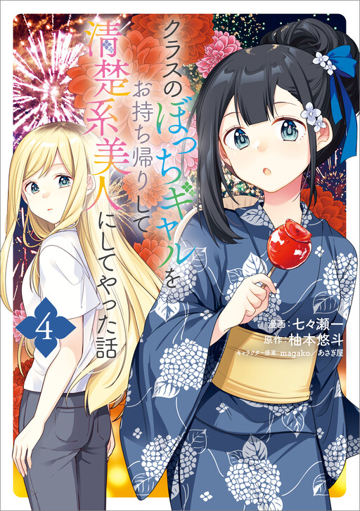

A Story of Taking Home a Lonely Gal from My Class and Turning Her into an Elegant Beauty
မိုးသည်းတဲ့ညတစ်ည... အထက်တန်းကျောင်းသားလေး Akira Akamori ကျောင်းကအပြန်လမ်းမှာ အတန်းထဲက Aoi Soutome ဆိုတဲ့ ဆံပင်ရွှေရောင်ဆိုးထားတဲ့ GAL လေးတစ်ယောက် ပန်းခြံထဲက ခုံတန်းလေးပေါ်မှာထိုင်နေတာမြင်လိုက်ရတယ်။